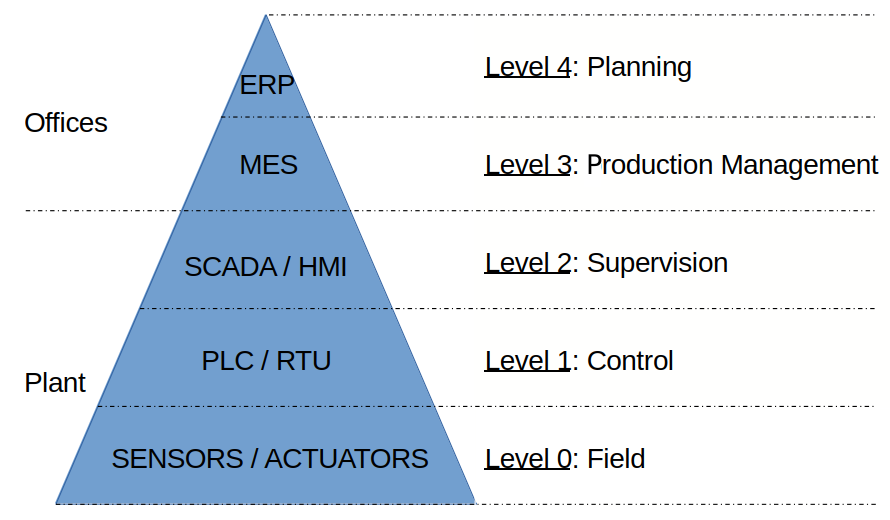

Mayor superficie de ataque
La integración IT/OT y la conectividad incorporan nuevas vías de exposición.
CIBERSEGURIDAD · TECNOLOGÍAS OPERACIONALES
Investigación aplicada para comprender, proteger y responder ante amenazas que afectan a sistemas de control industrial e infraestructuras críticas.
EL PROBLEMA
Los sistemas de tecnologías operacionales deben mantener disponibilidad, continuidad y determinismo. Al mismo tiempo, su creciente integración y conectividad amplían la superficie de exposición.
La investigación aborda la seguridad de las distintas capas que intervienen en un entorno industrial: gestión, supervisión, control y proceso físico.

La integración IT/OT y la conectividad incorporan nuevas vías de exposición.
Persisten tecnologías industriales que fueron diseñadas con prioridades diferentes a las de la ciberseguridad actual.
Actualizar software o firmware puede afectar disponibilidad y determinismo del proceso.
02 · ANÁLISIS
La línea de investigación relaciona incidentes, vulnerabilidades, controles de seguridad e impacto para identificar oportunidades de mitigación.
El Repository of Industrial Security Incidents constituye un punto de partida para estudiar históricamente incidentes de seguridad en sistemas industriales.
Incidentes → controles → impacto → mitigación
El análisis de alertas ICS permite observar vulnerabilidades, efectos de explotación, dimensiones afectadas y subsistemas comprometidos.
130alertas analizadas
Stuxnet, Shamoon y WannaCry permiten contrastar ataques conocidos con controles de seguridad y condiciones de mitigación.
Ataque → condición → control → impacto
Análisis de alertas ICS/CISA · toque la imagen para ampliar
03 · MEJORAS A LA INFRAESTRUCTURA
El abordaje combina mecanismos de protección, observación forense y nuevas técnicas de análisis.
Investigación sobre la incorporación de mecanismos criptográficos en entornos donde conviven protocolos clásicos, restricciones de operación y necesidades de disponibilidad.
Analizar el entorno SCADA/OT sin interrumpir el proceso ni depender necesariamente de una actualización del sistema.
Actualización y análisis de datasets de seguridad para profundizar la identificación de patrones y relaciones en incidentes OT.
04 · RESPUESTA A INCIDENTES
La investigación propone una capacidad de ciberdefensa desplegable para asistir el diagnóstico de infraestructura OT.
05 · DESAFÍOS
Dos tensiones permanecen en el centro de la investigación: proteger las comunicaciones y actualizar sin comprometer la operación.
de los sistemas relevados utiliza algún protocolo seguro.
La migración de protocolos clásicos puede requerir cambios de infraestructura.
¿Preservar la rigidez en favor del determinismo o romperla en favor de la ciberseguridad?
06 · QUIÉNES SOMOS
Somos un grupo de investigación vinculado a la Universidad Abierta Interamericana y al CAETI, orientado al estudio de la seguridad de sistemas de control industrial e infraestructuras críticas.
La línea integra análisis de incidentes, ciberseguridad industrial, criptografía, informática forense, experimentación sobre PLC/SCADA y nuevas técnicas de análisis.
Acceda al listado de publicaciones, congresos y trabajos vinculados con esta línea de investigación.
07 · CONTACTO
Para consultas, colaboraciones, actividades académicas o información sobre la línea de investigación: